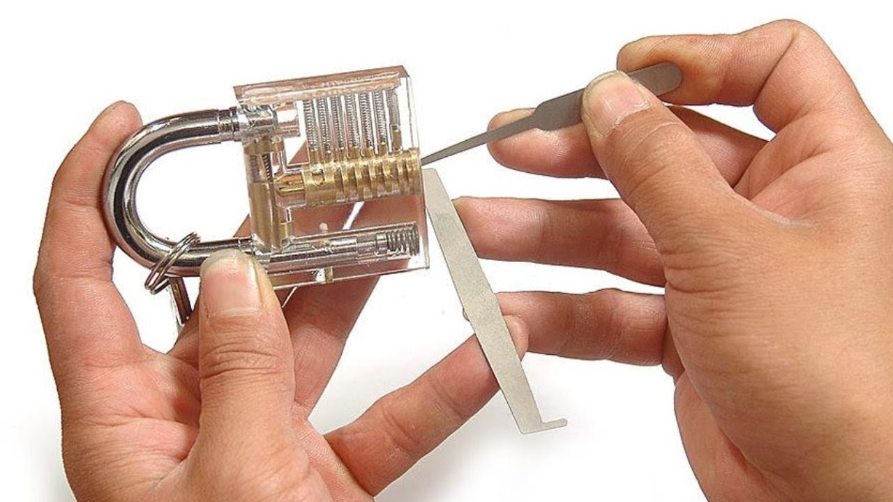
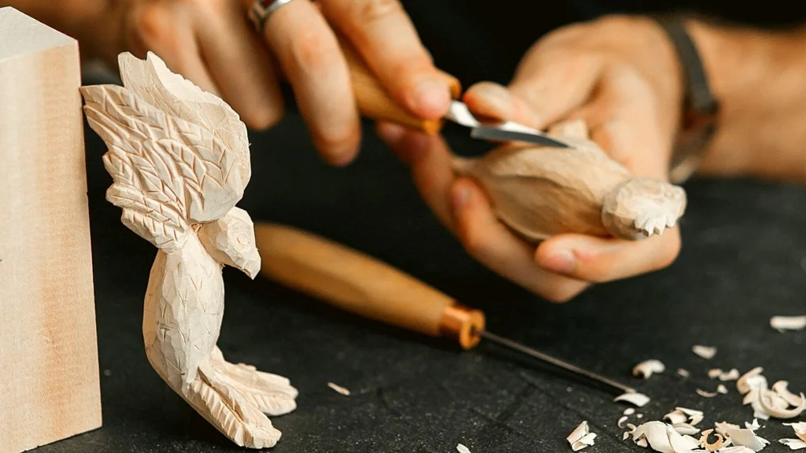
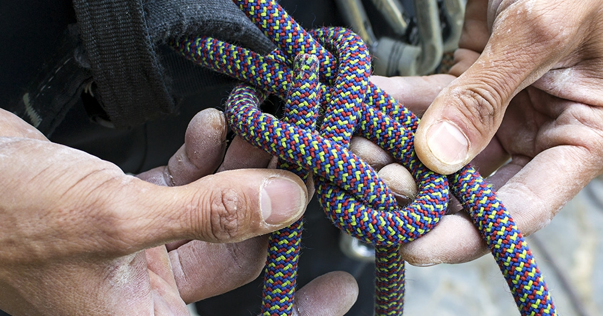
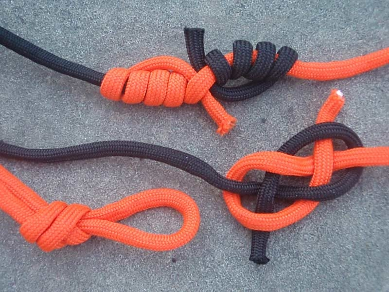

Домашни
Колекционерски
Креативни
Изработка
Обогатяващи
На открито
Социални
Спорт
Изработка
Представлява изработката, модификацията и поправката на предмети и уреди без помощта на експерти. Мисленето извън кутията, свързано с DIY (Do-it-yourself) проектите, е важно универсално-приложимо умение, а механичната работа може да служи като вид време за медитация.

Отключване на ключалки

Дърворезба

Връзване на възли
×


Отключване на ключалки
Не свързвайте това умение с грабежи. То може да ви бъде полезно в случай на забравен ключ, евакуация или просто да
впечатлите приятелите си. Свикването с по-трудни и по-трудни ключалки може да бъде забавно и предизвикателно изпитание и
не изисква много ресурси. Само не използвайте ключалката на входната си врата за експериментиране.
×
Връзване на възли




Може да звучи, сякаш би било полезно само за ловци и ентусиасти на тема оцеляване, но изучаването на различни възли може
да бъде успокояващ и медитативен процес, чрез който ще се сдобиете със знания, за които, в случай че ви потрябват, ще
бъдете много благодарни.